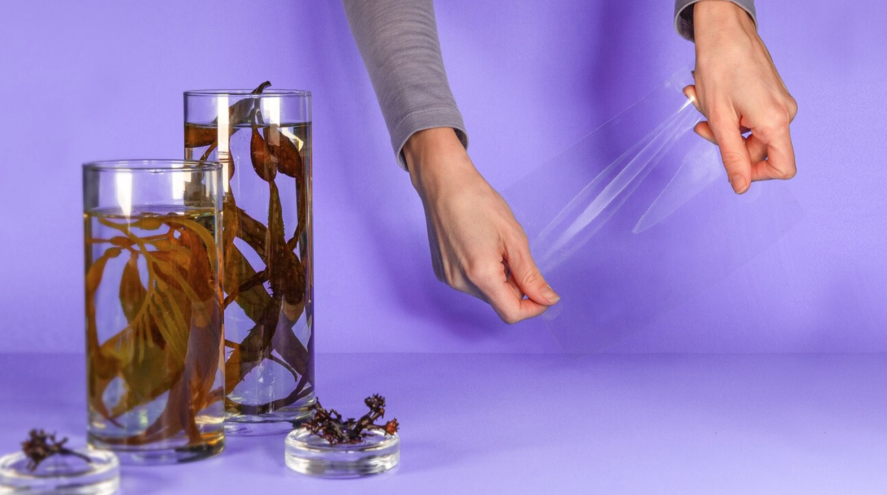

La contaminación por plásticos es uno de los mayores desafíos ambientales de nuestro tiempo, y la búsqueda de alternativas sostenibles se ha vuelto más urgente que nunca. Una de las soluciones más prometedoras ha emergido de las profundidades del mar: las algas.
Una alternativa biodegradable
Las algas están transformando la industria del empaque, ofreciendo una solución ecológica que reemplaza el plástico tradicional. Esta innovación no solo reduce la cantidad de residuos plásticos, sino que también promueve la creación de envases completamente biodegradables, que se desintegran sin dejar huella en el medio ambiente.
El uso de algas no solo protege el planeta, sino que también impulsa la economía verde, generando nuevas oportunidades en las comunidades costeras y fomentando la investigación en tecnologías sostenibles.
De las algas al producto final
El proceso de transformación de las algas en envases ecológicos comienza con la recolección de este recurso marino, que es luego procesado para crear materiales versátiles, desde cápsulas comestibles hasta envolturas biodegradables. Este ciclo no solo cumple con la funcionalidad de los envases, sino que también ofrece una solución efectiva para la crisis de residuos plásticos.
Los envases hechos de algas presentan numerosas ventajas frente a los plásticos tradicionales. Son biodegradables, no dejan residuos tóxicos y representan un paso crucial hacia un mundo más sostenible. Con la adopción creciente de esta tecnología, la era del plástico de un solo uso podría estar llegando a su fin, marcando el inicio de una nueva era de empaques respetuosos con el medio ambiente.
Las algas, un recurso natural abundante y renovable, están demostrando ser una solución poderosa para los desafíos ambientales que enfrentamos hoy. Transformadas en envases ecológicos, están cambiando la forma en que pensamos sobre el empaque y la sostenibilidad.
Impacto
El uso de envases a base de algas no solo ayuda a reducir la dependencia del plástico, sino que también contribuye significativamente a la reducción de residuos, promoviendo un ciclo de vida de los productos más limpio y responsable.